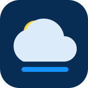

SkyStation
Offline mode is active. The dashboard shell is ready and weather data will refresh when the connection returns.

Offline mode is active. The dashboard shell is ready and weather data will refresh when the connection returns.